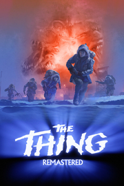

The Thing: Remastered
Detalles
|  | |
| Tiempo de juego | No Jugado |
| Última actividad | Nunca |
| Añadido | 2/5/2025 1:30:39 |
| Modificado | 2/5/2025 1:31:17 |
| Estado de finalización | Not Played |
| Librería | Playnite |
| Fuente | 1 TB EXT |
| Plataforma | PC (Windows) |
| Fecha de lanzamiento | |
| Puntuación de la Comunidad | 86 |
| Puntuación de la Crítica | |
| Puntuación de usuario | |
| Género | Acción |
| Desarrollador | Computer Artworks Nightdive Studios |
| Editor | Nightdive Studios |
| Característica | Cloud Saves Compat. Total Con Mando Logros De Préstamo Familiar Un Jugador |
| Enlaces | Punto de encuentro Discusiones Guías Noticias Página de la tienda PCGamingWiki Logros |
| Tag | 3D Acción Aventura Ciencia ficción Combate Disparos Disparos en tercera persona Extraterrestres FPS JcE Las elecciones importan Película Psicológicos Sangre Supervivencia Supervivencia / Terror Suspense Tercera persona Terror Un jugador |
Descripción
Nadie sobrevive por su cuenta.
Vuelve el juego de survival horror en tercera persona de 2002 que sirvió de secuela a la rompedora película de 1982. Nightdive Studios ha remasterizado el título para recuperar esa innovadora mezcla de acción trepidante en equipo, terror y supervivencia en un contexto contemporáneo. Esta versión incluye texturas suavizadas, iluminación píxel a píxel, resolución 4K y hasta 144 FPS.

El terror empieza allí donde termina la película.
Eres el capitán J. F. Blake, líder de un equipo de rescate de las Fuerzas Especiales estadounidenses. Tu misión es investigar los sangrientos sucesos y las enigmáticas muertes del equipo científico de la estación 31, una base de investigación en medio del gélido páramo antártico. En este entorno inhóspito, tu equipo se encuentra con un ser extraterrestre que cambia de forma y adopta la apariencia de la gente que asesina. Atrapados por las condiciones climáticas e infectados por esta terrible entidad, deberás usar a todos los miembros de tu equipo si quieres cumplir tus objetivos, aunque solo sea sobrevivir. Pero ojalá pudieras distinguir quiénes siguen siendo humanos…

Características principales de The Thing: Remastered:
Vuelve el juego de survival horror en tercera persona de 2002 que sirvió de secuela a la rompedora película de 1982. Nightdive Studios ha remasterizado el título para recuperar esa innovadora mezcla de acción trepidante en equipo, terror y supervivencia en un contexto contemporáneo. Esta versión incluye texturas suavizadas, iluminación píxel a píxel, resolución 4K y hasta 144 FPS.
El terror empieza allí donde termina la película.
Eres el capitán J. F. Blake, líder de un equipo de rescate de las Fuerzas Especiales estadounidenses. Tu misión es investigar los sangrientos sucesos y las enigmáticas muertes del equipo científico de la estación 31, una base de investigación en medio del gélido páramo antártico. En este entorno inhóspito, tu equipo se encuentra con un ser extraterrestre que cambia de forma y adopta la apariencia de la gente que asesina. Atrapados por las condiciones climáticas e infectados por esta terrible entidad, deberás usar a todos los miembros de tu equipo si quieres cumplir tus objetivos, aunque solo sea sobrevivir. Pero ojalá pudieras distinguir quiénes siguen siendo humanos…
Características principales de The Thing: Remastered:
- Dirige a tu equipo a través de veinte niveles espeluznantes en los que te enfrentarás a monstruos aterradores como arañas-cabeza, caminantes humanoides y bestias gigantes con montones de tentáculos.
- Las mecánicas avanzadas de confianza y miedo añaden una nueva capa de interacción. La forma en que influyes en el estado psicológico de tu equipo determina si querrán cooperar contigo o no.
- Disfruta de nuevas tecnologías que crean un nivel de inmersión mucho más profundo: iluminación dinámica, un mapeo de texturas espectacular, sombras y profundidad de campo complementada con modelos y entornos mejorados.
- Usa armas increíbles como ametralladoras, explosivos y lanzallamas para achicharrar a tus enemigos.
- Nuevos logros.
- Mejoras en mecánicas y jugabilidad para que disfrutes mucho más de la experiencia.
- Elige varios caminos para resolver los problemas que se te presentan y cumplir tus objetivos.